2026-11-25 · 브랜치 dev/two-track
experiments/worlds/suites/cases)각 맵에는 상황이 하나만 들어 있고, 모두 좌우 반전 쌍이 있다. 교차 위치와 교차 각도는 생성한 뒤 자동으로 계산해 기록한다.
| 분류 | 포함된 상황 |
|---|---|
| 기하 | 90° 코너(반경 0–40 cm), 30–150° 꺾임, S자, U턴, 지그재그, 물결, 나선 |
| 교차·겹침 | 가로선 교차 30–90°, 연속 교차, 원형 교차로, 자기 교차, 3–20 cm 간격 평행선, Y 갈림·합류, T자 가지, 겹침, 다른 선과 접촉 |
| 선 품질 | 3–20 cm 끊김(직선·곡선), 점선 |
| 언덕 | 경사로(3–7 cm), 경사로 직후 회전, 회전 직후 경사로, 경사로 위 교차·끊김, 연속 경사로 |
| 자기 교차 | 경사로 직후 회전 |
|---|---|
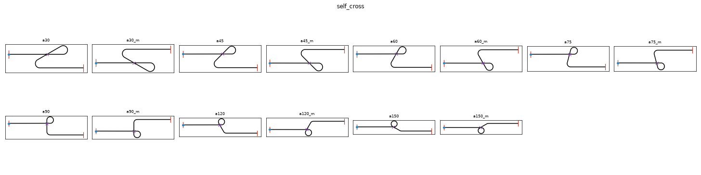 |
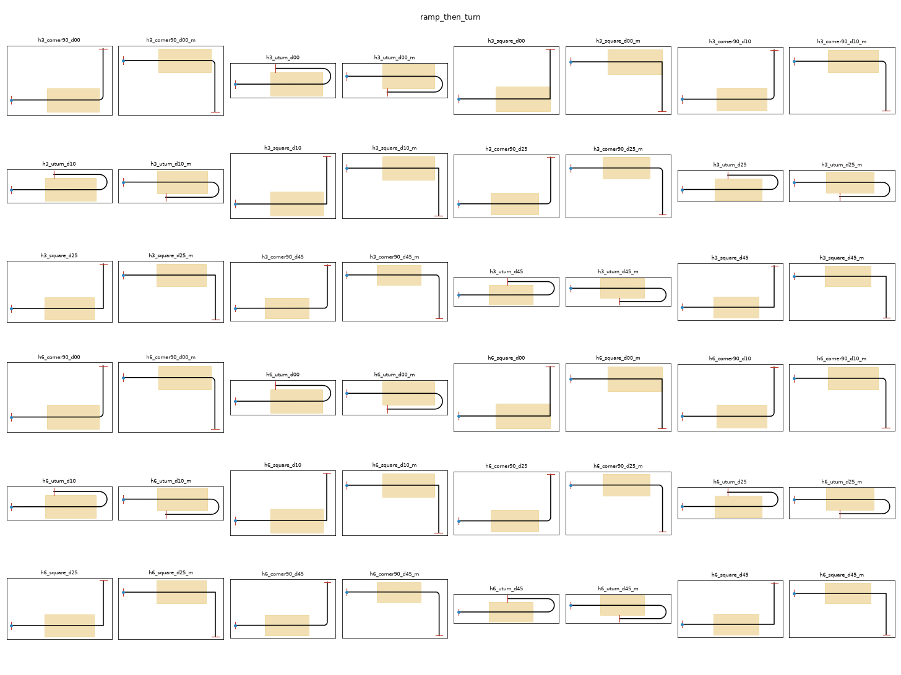 |
experiments/oracle/shadow_route.py, 개발 전용)주행 중에 노드가 따라가려는 경로를 실제 선과 비교해서, 로봇 기준 오차를 프레임마다 남긴다. 정답 좌표는 개발 도구에서만 쓰고 제출물에는 들어가지 않는다.
경로를 정답으로 바꿔 주면 항상 실패하던 맵 56개 중 46개가 완주한다. 시야를 카메라만큼 제한해도 42개가 완주한다. 그러니 실패의 대부분은 제어가 아니라 인지(경로 품질) 문제다.
경로의 일부 구간만 정답으로 바꾸는 부분 오라클로 더 좁혀 봤다. 경사로 직후 회전 6맵에서 "경사로 끝 → 회전 진입" 약 0.7 m 구간만 경로가 맞으면 6/6이 완주한다.
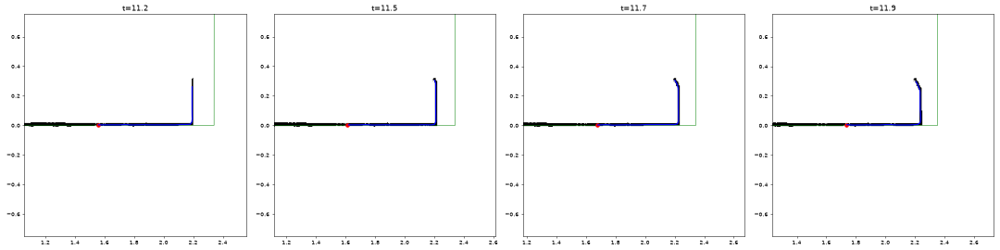
직각 코너가 실제 위치(초록)보다 13–15 cm 앞에 기록됐다. 원인을 프레임별로 추적하면 두 가지다.
| 실제 카메라 영상 | 노드가 쓰는 BEV (0.85 m에서 잘림) |
|---|---|
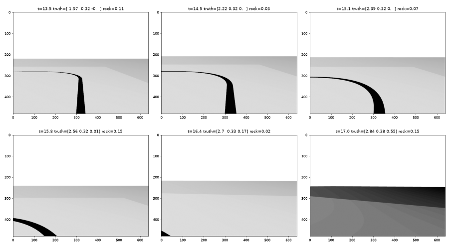 |
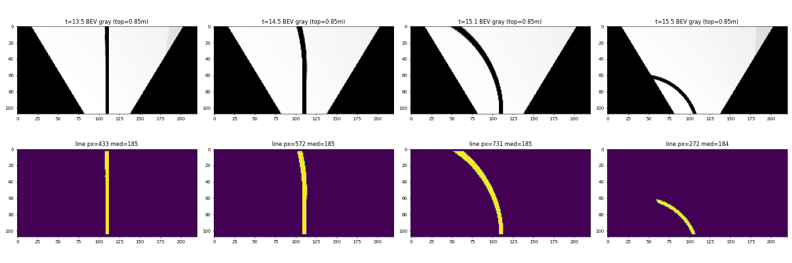 |
반경 0으로 120° 넘게 꺾이는 6맵은 기준선에서 6개 모두 실패한다. 꺾여 나가는 선은 지도에 기록되지만, 경로를 이어 붙이는 trace가 ±100°까지만 찾기 때문에 이어지지 않는다.
| 시도 | 결과 | 판정 |
|---|---|---|
경사로 IMU 보정 (imu_slip 피치 변화율 0.3 rad/s 이상일 때만 + imu_floor + deck_xfar 0.45) |
항상 실패 맵 5.4% → 16.7% (p = 0.003), 공식 트랙 8/8, hills60 0/24 → 2/24 | 채택 (기본값) |
| 학습 기반 선 복원 R3 (경로가 끊길 때만 사용) | 11.6% → 25.9% (p = 0.005), 항상 성공 맵 회귀 3 → 4 | 채택 후보 |
| 선 복원 R4 (더 큰 모델) | 24.1% (p = 0.011), 회귀 6 | R3와 차이 없음 |
매 프레임 복원 경로만 따라가기 (restore_replace) |
공식 트랙 0/4 | 기각 |
| 깊이 인지 (선 마스크 + 학습한 깊이로 투영) | 항상 실패 맵 9/56 (기준 3/56), 고부하 상태 측정 | 재판정 필요 |
선 폭으로 지형 높이 추정 (terrain.py) |
오프라인 오차는 절반으로 줄었으나 주행 개선 없음 | 기각 |
| 곡률 외삽, 흔들림 기준 완화, 원거리 덧쓰기, 감속, 시야 축소 | 우연 수준이거나 공식 트랙을 깸 | 기각 |
| 엔코더+IMU 미끄러짐 보정을 항상 켬 | 위치 오차는 16–19 cm → 2–3.5 cm로 줄었으나 공식 트랙 0/4 | 피치 변화율이 클 때만 켜는 방식으로 수정 |
예각 탐색을 ±150°까지 확대 (trace_wide) |
끊긴 선 맵 34개를 깨뜨림 | 기각 |
기각한 기능도 모두 파라미터로 남겨 두었고 기본값은 꺼져 있다. 자세한 기록은 docs/OPEN_SOURCE_SURVEY.md 5장에 있다.
카메라 영상을 받아 픽셀마다 "선인지"와 "몇 m 앞인지"를 낸다. Gazebo 영상과 Isaac Sim 합성 영상을 섞어 학습했다.
| 공식 트랙 BEV: 정답 / OpenCV / 학습 모델 | 공식 트랙 한 바퀴 선 지도 |
|---|---|
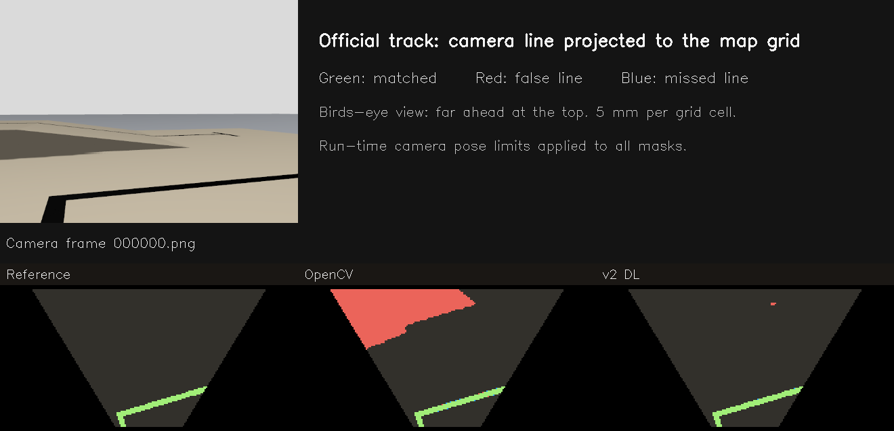 |
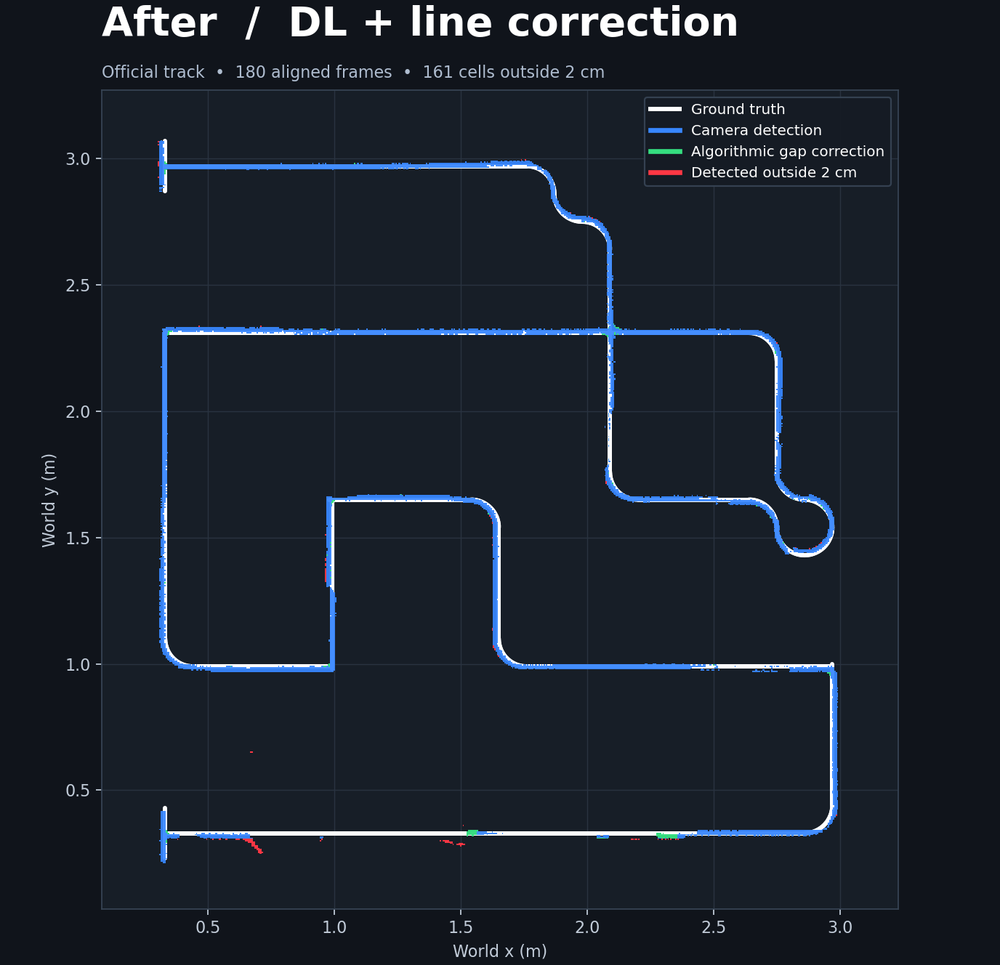 |
| 모델 | 선 IoU | 선 깊이 오차 (먼 거리) | CPU 추론 |
|---|---|---|---|
| 선만 (기본형) | 0.894 | – | 약 9 ms |
| 분할+깊이 (기본형) | 0.890 | 1.63 cm (5.1 cm) | 9–17 ms |
| 분할+깊이 (소형, Jetson용) | 0.884 | 1.74 cm (5.0 cm) | 5–13 ms |
| 분할+깊이 480×360 입력 (학습 중) | – | 2 에폭 만에 먼 거리 4.5 cm | 약 2.25배 |
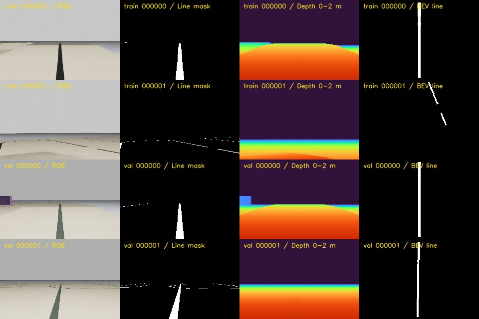
Isaac Sim 합성 데이터. 왼쪽부터 RGB, 선 마스크, 깊이, BEV. 조명, 선 색, 노이즈를 무작위로 바꿨다.
로봇이 지금까지 본 선과 본 영역(128×128, 1.25 cm 칸)을 입력으로 받는다. 출력은 앞으로 갈 경로다.
학습 데이터는 렌더링 없이 정답 트랙에서 바로 만든다. 카메라 시야, 근거리 사각지대, 끊김, 위치 오차, 검출 잡음을 흉내 내서 "로봇이 실제로 본 지도"를 생성한다.
| 시험 맵 기반 데이터 | 무작위 합성 트랙 (예각·U턴·교차·평행선 포함) |
|---|---|
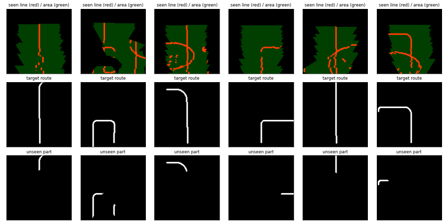 |
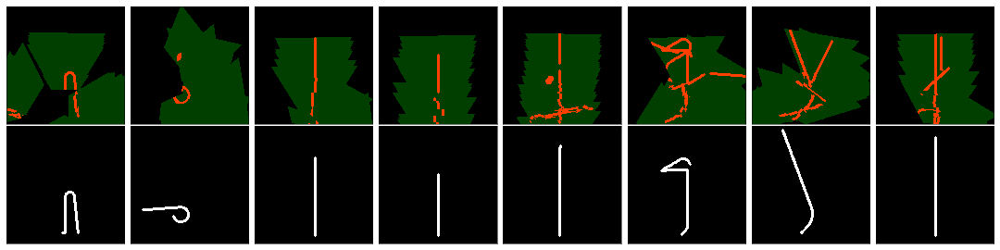 |
학습에 쓰지 않은 hills60과 케이스 맵 7,880장으로 평가했다.
| 모델 | 경로 IoU | 안 보인 구간 복원율 | 엉뚱하게 그린 비율 |
|---|---|---|---|
| 복원 없음 | 0.446 | 8.9% | 29.9% |
| R1 (4만 장) | 0.725 | 82.3% | 11.0% |
| R3 (10만 장, 합성 트랙 포함) | 0.750 | 89.1% | 10.1% |
| R4 (폭 32) | 0.737 | 90.0% | 11.8% |
예각에서 합성 데이터가 효과를 냈다. R1은 꺾여 나가는 선을 무시했지만, R3는 그 선을 경로로 잡는다.
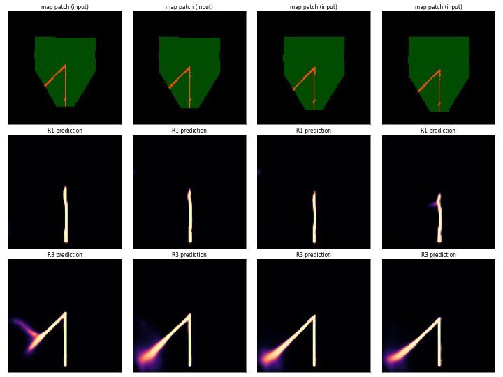
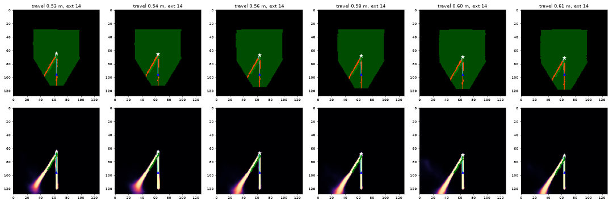
실제 주행에서 R3가 150° 예각을 이어 붙이는 장면. 초록이 복원된 경로다.
R3가 가장 못한 사례들:
| 안 보인 구간을 놓친 10개 | 엉뚱하게 그린 10개 |
|---|---|
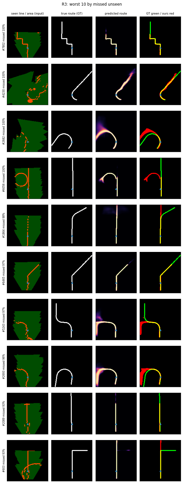 |
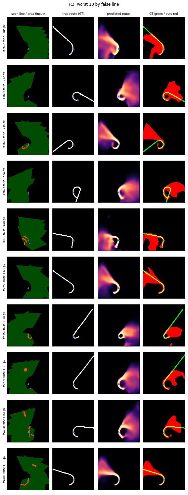 |
| 모델 | 지연 |
|---|---|
| 분할+깊이 기본형 | 9.1 / 19.0 ms |
| 분할+깊이 소형 | 5.5 / 11.4 ms |
| 선 복원 | 8.1 / 15.6 ms (경로가 끊길 때만 호출) |
experiments/jetson/bench_models.py를 실행하면 된다. 절차는 experiments/jetson/README.md에 있다. 보드에 SSH로 접속할 수 있으면 원격으로 측정할 수 있다.| 도구 | 용도 |
|---|---|
experiments/worlds/gen_cases.py, summarize_cases.py |
목적별 맵 생성과 상황별 실패 집계 |
experiments/oracle/run_oracle.py (ORACLE_LEVEL, ORACLE_WINDOW) |
정답 경로로 주행. 부분 구간만 정답으로 바꿀 수도 있다 |
experiments/oracle/shadow_route.py (SHADOW_SNAP, SHADOW_RAW) |
경로 오차 기록, 지도·BEV 스냅샷, 원본 프레임 저장 |
experiments/eval/pitch_offline.py, terrain_offline.py, terrain_isaac.py |
투영 오차 오프라인 평가 |
experiments/restore/make_dataset.py, train.py, visualize.py |
선 복원 데이터 생성, 학습, 최악 사례 그림 |
experiments/jetson/ |
Jetson 지연 측정과 배포 계획 |
주의 사항
- 벤치는 반드시 LAB_NAME을 지정해서 돌린다. 도메인이 겹치면 다른 컨테이너의 /odom이 섞인다.
- follower는 부모 프로세스가 죽으면 같이 종료되도록 해 두었다. 고아 프로세스가 다음 실행의 로봇을 움직이는 사고가 있었기 때문이다.
tegrastats 사용량을 보드에서 잰다.